About · Photography
Small stories, held in light.
A quiet visual notebook from the lab, the road, and the spaces between. Replace the sample files in photos/ with your own images; the gallery layout stays the same.
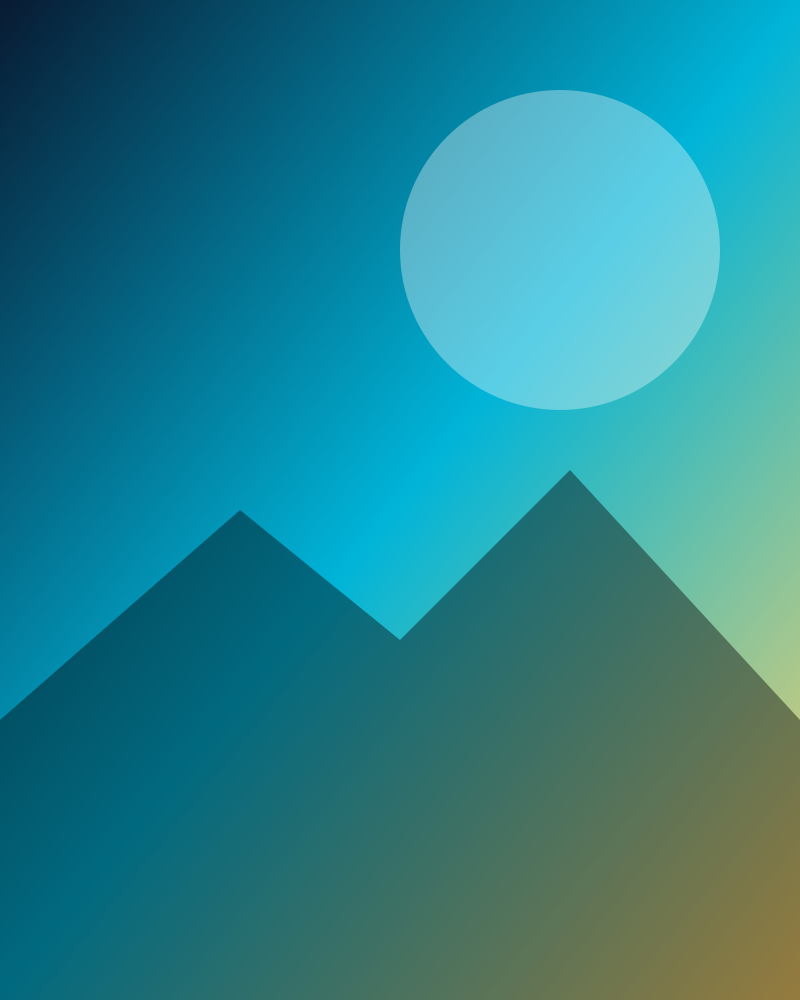
First lightMorning starts with an open notebook.
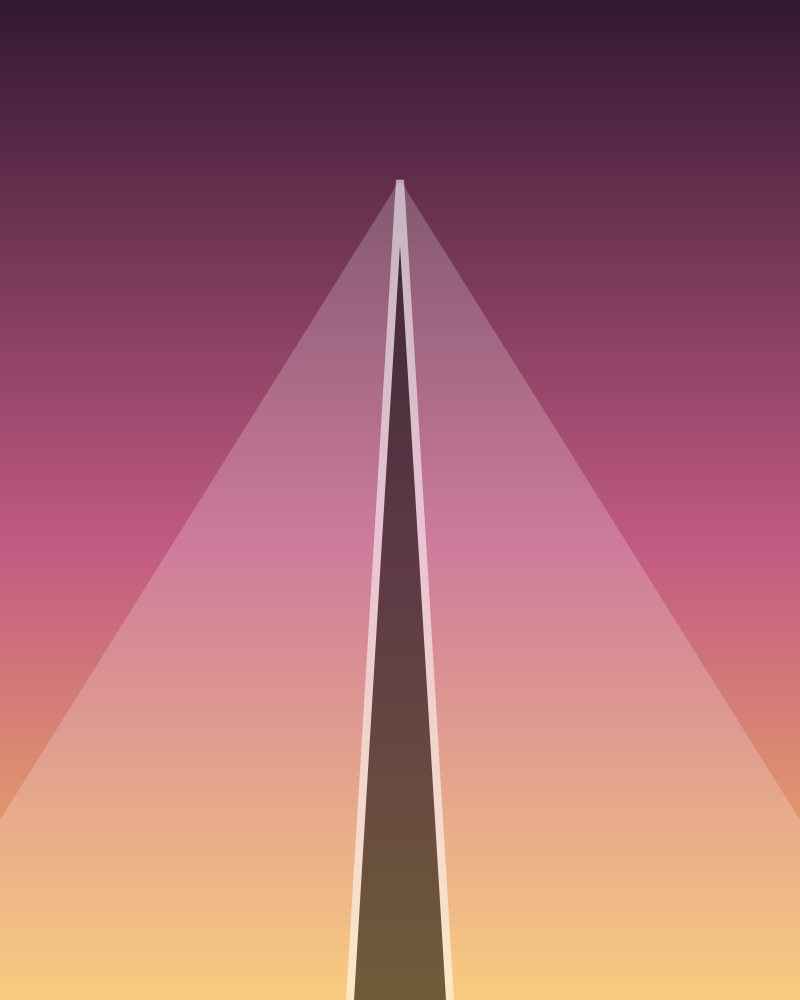
On the wayEvery route makes room for noticing.
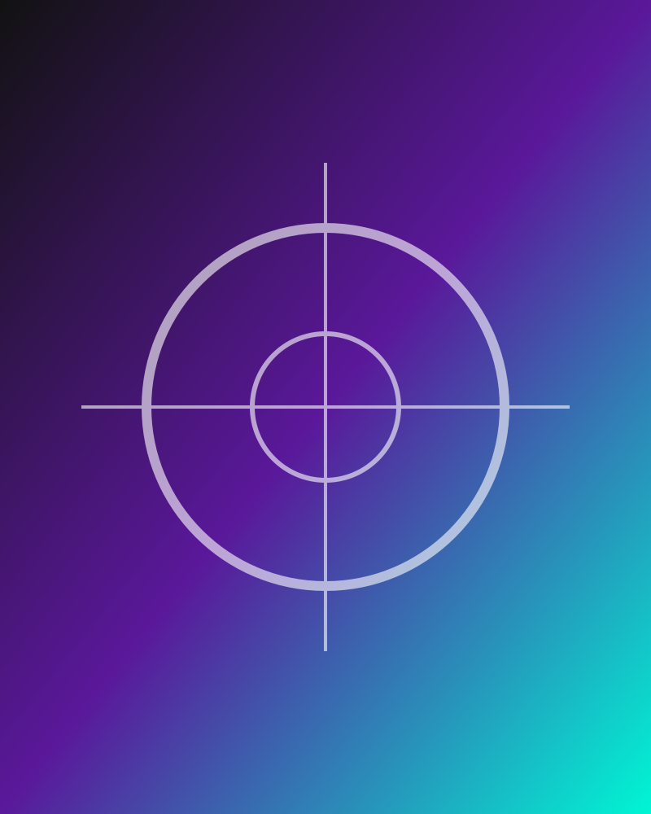
InstrumentsPrecision is also a kind of patience.
Blue hourThe day softens at its edges.
Working notesIdeas become visible one mark at a time.
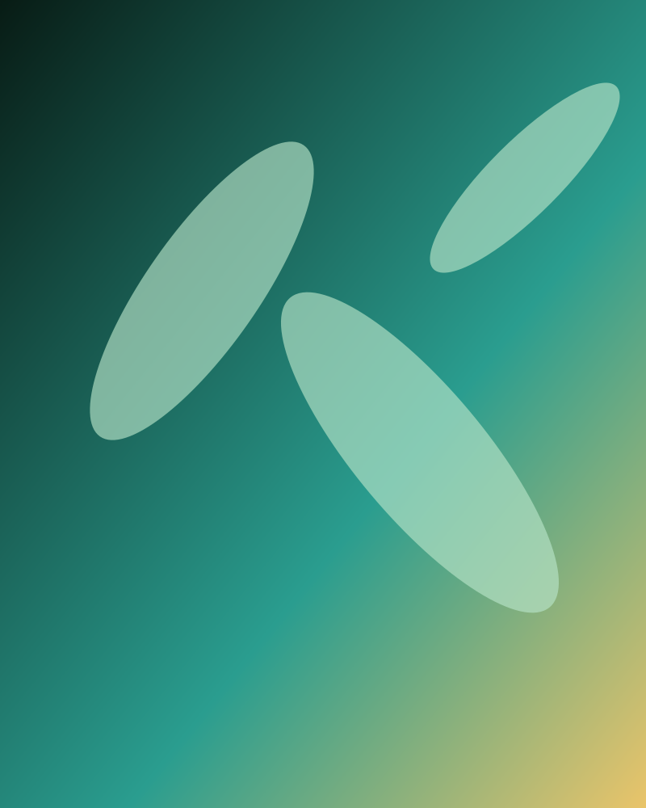
OutsideA reminder that systems are never still.
After the experimentWhat remains is often the best part.
StructureGeometry hides in ordinary places.
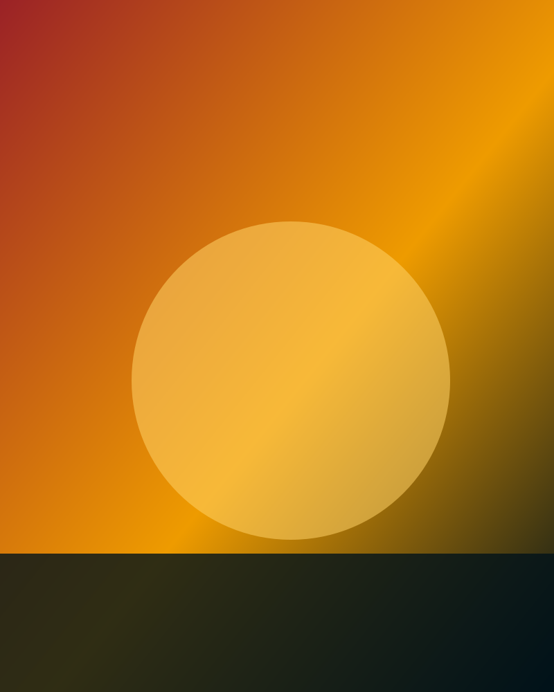
WeatherSome questions arrive as colour.
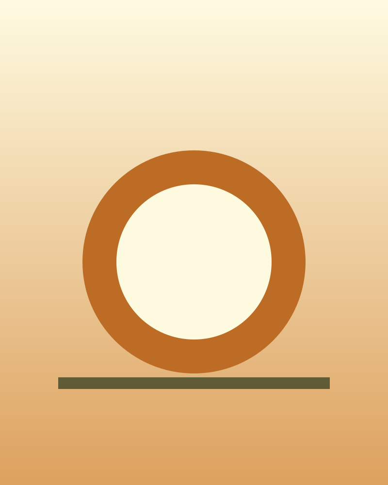
Still lifeSmall objects carry long histories.
DistancePerspective changes the measurement.
DraftsClarity is a form of care.
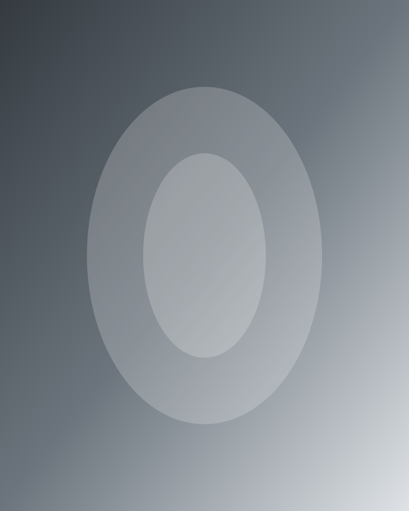
ReflectionLook twice before deciding.
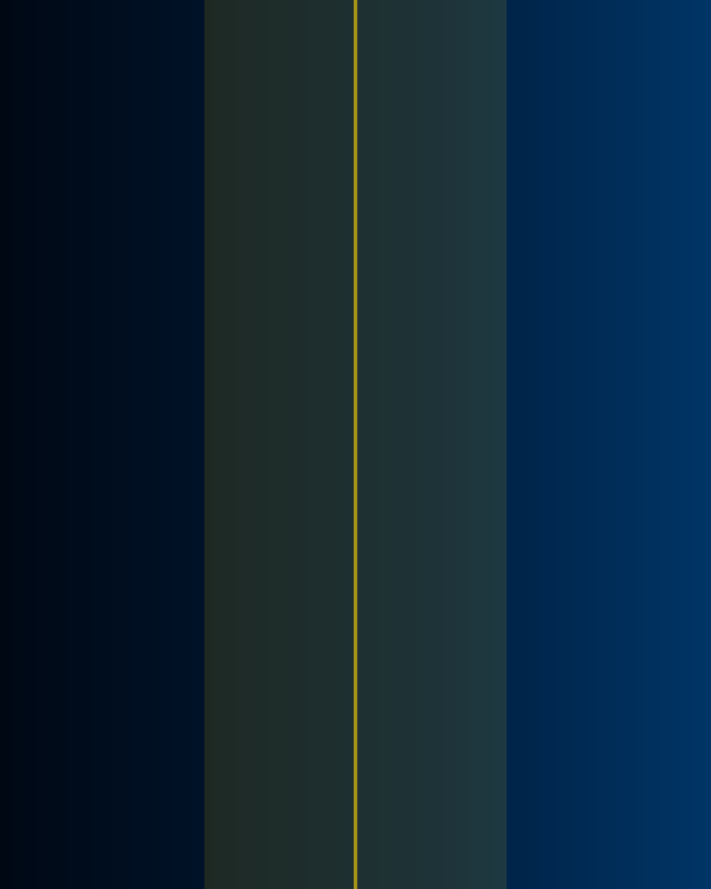
ThresholdEvery new room changes the frame.
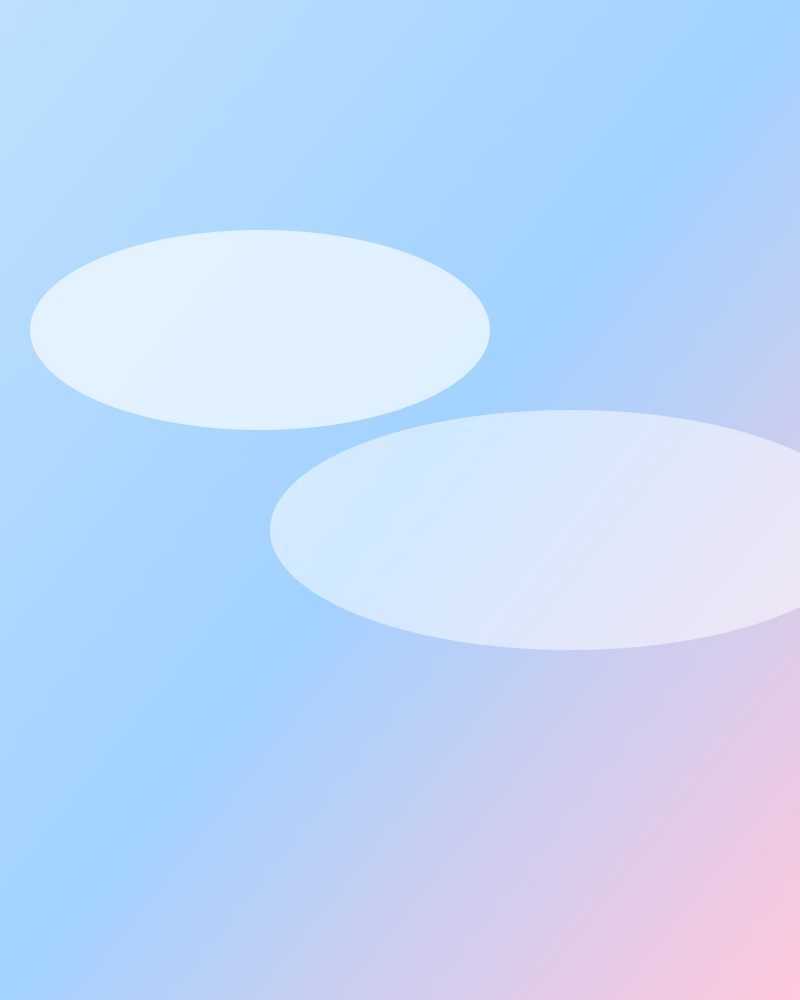
DriftNot everything needs to be solved today.
TextureMaterials tell stories at every scale.
MarginThere is knowledge in the pause.
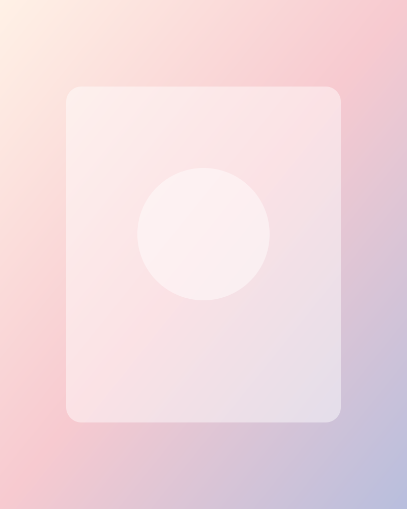
Open roomMake space for the next idea.
Field notesObservation is the beginning of research.
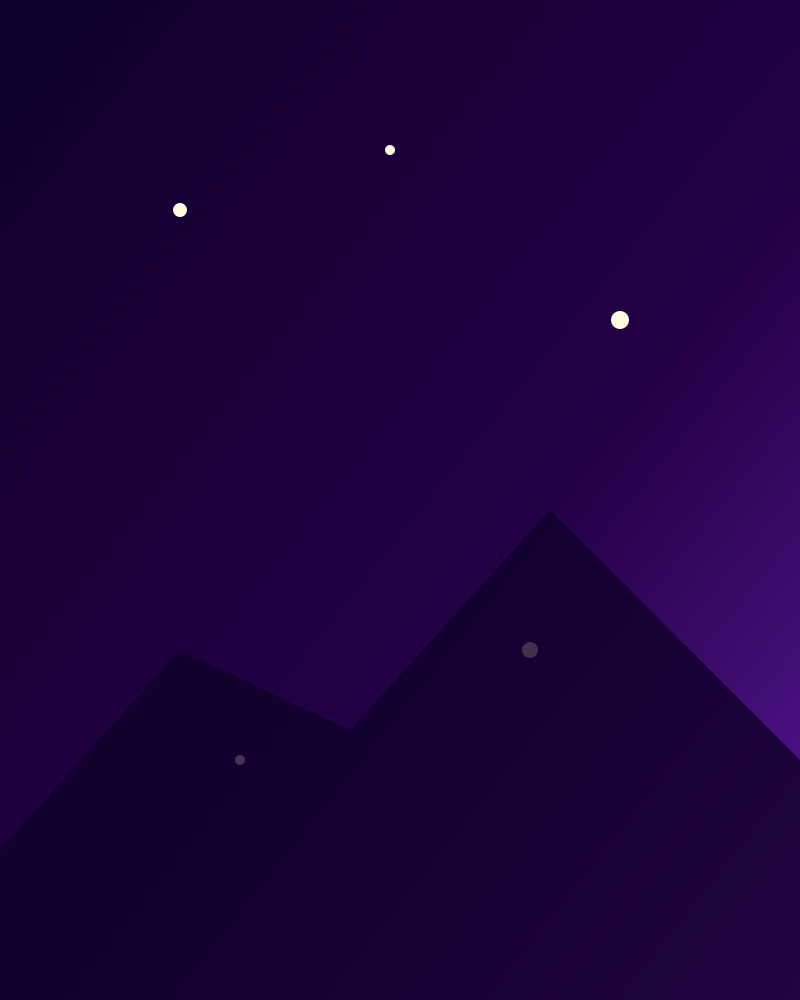
Night workSome of the best thinking happens quietly.